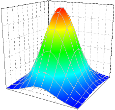
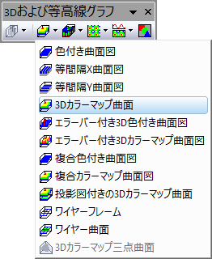

カラーマップ曲面図
Color-Map-Surface
- 
必要なデータ
- ワークシート: 少なくとも1つのZ列（あるいは、その部分領域）を選択します。Z列と関連するXY列がある場合、そのXY列が使われます。そうでない場合、ワークシートのデフォルトのXY値が使われます。
- XYZZデータがあり、3D曲面図をプロットして2つ目のZ列をカラーマップとして設定したい場合は、作図の詳細ダイアログの塗りつぶしタブでマッピングに使用する列を指定できます。
または、
- 2つの行列のうち2番目の行列を使用して曲面図のカラーマップを設定する場合、これら2つの行列は同じ行列シート内の行列オブジェクトとし用意されている必要があります。
または、
- イメージ: 1つのイメージウィンドウのアクティブページ
グラフ作成
行列シート/イメージウィンドウをアクティブにするか必要なデータをワークシート上で選択します。
メニューから｢｣を選択します。
または、
3Dおよび等高線グラフツールバーの3Dカラーマップ曲面ボタンをクリックします。
- 
テンプレート
- glCMAP.OTP (OpenGL)
- Cmap.OTP
(Originのプログラムフォルダにインストールされています。)
Notes
Z値はXとYのグリッド線の曲面で決まり、カラーマップにより色が塗られます。